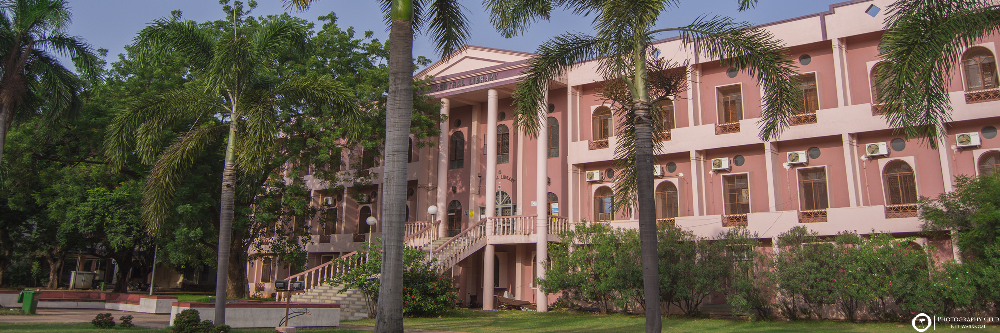

Home
ABOUT US
FAQ
GALARY
HISTORY
MISSION
VISSION
VISIT NITW
ADMINISTRATION
Administrative Officers
Board of Governers
Building And Works Committee
Chairman
Former Charmain
Chief Vigilance Officer
Director
ACADEMICS
Academic calender
Academic Section
Admissions
Center
Computer Centre
Rules & Regulation
Schemes & Syllabus
TEQIP-|||
DEPARTMENTS
Biotechnology
Chemical Engineering
Civil Engineering
Computer Science and Engineering
Physics
Physical Engineering
Mathematics
Mechanical Engineering
R&D AND C
Area Of Research
Departments Wise Research Funds
Download
Research Scholors
Research Advisory Committee Members
Research & Consultancy
Research Projects
Research Publications
Research Presentation
Research Centers
STUDENTWELFARE
Associations
Club
EPICS Projects
IEEE
NCC & NSS
Sports
Special Cells
SC/ST Cell
FACILITIES
Bank & ATM
Center For Advanced Materials
Center For Automation & Instructions
Conference Halls
Medical
Motor Trans Port Section
NIT Canteen
Post Office
PLACEMENT
NIRF
NIRF 2015-2016
NIRF 2016-2017
TLC
ALUMNI
RAA
IYD-2018

ADMISSIONS
STUDENT PORTAL
FACULTY PORTAL
E&ICT ACADEMY
GRIEVANCES PORTAL
ANNOUNCMENTS
16 Oct 2018 : Advertisement for Temporary positions of Academic Staff in the Teaching Learning Centre. 10 Sep 2018 : Diamond Jubilee Celebrations ( Conferences And Other Events ) 12 Nov 2018 : Applications are invited for a temporary post of Junior Research Fellow (JRF) to work in the Science and Engineering Research Board (SERB), Department of Biotechnology. 12 Nov 2018 : Advertisement for JRF position in a DST funded project, in the Dept.of Metallurgical and Materials Engineering. 12 Nov 2018 : Applications are invited from the interested candidates for ONE post of Junior Research Fellow (JRF) under Science and Engineering Research Board (SERB), Department of Electrical Engineering. 06 Nov 2018 : Provisional List of Shortlisted Ph.D. Candidates for December 2018 session 17 Oct 2018 : TELANGANA ACADEMY OF SCIENCES AND NATIONAL INSTITUTE OF TECHNOLOGY, WARANGAL jointly hosts the prestigious TELANGANA STATE SCIENCE CONGRESS (TSSC-2018) to mark the 131st Birth Anniversary of Sir Srinivasa Ramanujan, FRS and Diamond Jublee Celebrations (60 Years) of NIT Warangal, 22 - 24 December, 2018 organised at National Institute of Technology Warangal Warangal 506 004. Telangana State, India. 16 Oct 2018 : Advertisement for Temporary positions of Academic Staff in the Teaching Learning Centre.
NEWS/NOTICES/TENDERS
16 Oct 2018 : Advertisement for Temporary positions of Academic Staff in the Teaching Learning Centre. 10 Sep 2018 : Diamond Jubilee Celebrations ( Conferences And Other Events ) 12 Nov 2018 : Applications are invited for a temporary post of Junior Research Fellow (JRF) to work in the Science and Engineering Research Board (SERB), Department of Biotechnology. 12 Nov 2018 : Advertisement for JRF position in a DST funded project, in the Dept.of Metallurgical and Materials Engineering. 12 Nov 2018 : Applications are invited from the interested candidates for ONE post of Junior Research Fellow (JRF) under Science and Engineering Research Board (SERB), Department of Electrical Engineering. 06 Nov 2018 : Provisional List of Shortlisted Ph.D. Candidates for December 2018 session 17 Oct 2018 : TELANGANA ACADEMY OF SCIENCES AND NATIONAL INSTITUTE OF TECHNOLOGY, WARANGAL jointly hosts the prestigious TELANGANA STATE SCIENCE CONGRESS (TSSC-2018) to mark the 131st Birth Anniversary of Sir Srinivasa Ramanujan, FRS and Diamond Jublee Celebrations (60 Years) of NIT Warangal, 22 - 24 December, 2018 organised at National Institute of Technology Warangal Warangal 506 004. Telangana State, India. 16 Oct 2018 : Advertisement for Temporary positions of Academic Staff in the Teaching Learning Centre.
WORKSHOPS/CONFERENCES
16 Oct 2018 : Advertisement for Temporary positions of Academic Staff in the Teaching Learning Centre. 10 Sep 2018 : Diamond Jubilee Celebrations ( Conferences And Other Events ) 12 Nov 2018 : Applications are invited for a temporary post of Junior Research Fellow (JRF) to work in the Science and Engineering Research Board (SERB), Department of Biotechnology. 12 Nov 2018 : Advertisement for JRF position in a DST funded project, in the Dept.of Metallurgical and Materials Engineering. 12 Nov 2018 : Applications are invited from the interested candidates for ONE post of Junior Research Fellow (JRF) under Science and Engineering Research Board (SERB), Department of Electrical Engineering. 06 Nov 2018 : Provisional List of Shortlisted Ph.D. Candidates for December 2018 session 17 Oct 2018 : TELANGANA ACADEMY OF SCIENCES AND NATIONAL INSTITUTE OF TECHNOLOGY, WARANGAL jointly hosts the prestigious TELANGANA STATE SCIENCE CONGRESS (TSSC-2018) to mark the 131st Birth Anniversary of Sir Srinivasa Ramanujan, FRS and Diamond Jublee Celebrations (60 Years) of NIT Warangal, 22 - 24 December, 2018 organised at National Institute of Technology Warangal Warangal 506 004. Telangana State, India. 16 Oct 2018 : Advertisement for Temporary positions of Academic Staff in the Teaching Learning Centre.
Academics
Programs
Student Life
Quik Links
Admissions
Heritage
Events
Routine Orders
Faculty Login
Euphrates
Clubes and Associations
Contact US
Academic Service
Placement
Student Welfare
RTI Act
TEQIP-III
NMEICT
Facilities & Services
Sitemap
National Institute of Technology, Warangal - 506004, TS, INDIA | NITWGL Phone: +91-870-2459191 | FAX : +91-870-2459547Copyright © 2018. WSDC